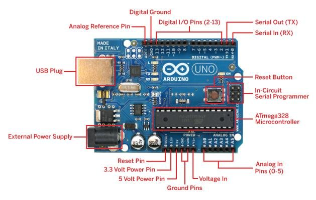

Week 12-14: Embedded Programming
Before this elective I had no experience with electronics so I had to start from the basics. The first thing I learned is Ohm's law which states that the electric current is proportional to voltage and inversely proportional to resistance. I also found out that for current to flow in a cicuit, there needs to be a difference in voltage across the circuit (potential difference) .I found out about this when I was playing around with the arduino and I was wondering why my LED was not lighting up, then I realised I needed to connect it to ground.
The first thing I learned about embedded programming is about the Arduino and its capabilities. The arduino is a microcontroller that communicates between input and output devices. It uses Arduino IDE software with code written in C++ to receive instructions. The pins on the top row labled 1 to 13 are the digital pins where input devices are plugged in. The pins on the bottom right labled A0 to A5 are analog input pins which are used to read analog signals from devices such as potentiometer. Lastly, for the pins on the left of that are the power pins and the ground pins. The arduino can either be powered by a usb cable up to 5 volts or an external power supply up to 20 volts for more powerful components.
These are some common input devices.
1. Pusbutton - Breaks the circuit when pressed. Arduino can detect when when the push button is pressed and turn it into a digital signal.
2. Light Dependent Resistor - As light intensity increases, the resistance decreases. Arduino can detect the change in resistance value and convert it into a digital signal
3. Temperature sensor - Detects changes in temperature. Temperature values can be mapped to digital signals
4. Ultrasonic sensor - Detects distance from a solid object. Distance values can be converted into digital signals

These are some common output devices.
1. Stepepr Motor - Spins really fast.
2. Servo - a motor than can turn 180 degrees. Can be precisely controlled to turn to certain angles
3. Led - Emits light
4. LED display - Display output messages
These are some other electrical components.
1. Resistor - Limit flow of current to it does not damage components
2. Breadboard - Used to build circuits and connect components
3. Wires - Connect components to breadboard and arduino
4. LED display - Display output messages
This is the one of the circuits I did in class.It uses a servo as the output devices and a potentiometer as the input device. This is how the code works
1. The first line tells the arduino that the potentiometer is connected to pin 0. The second line creates a integer variable that stores the servo position.
2. This line tells the arduino that the servo is attacthed to pin 9
3. The first line reads the analog values of the potentiometer. Second line maps the 1024 analog values from the potentiometer to the 180 degrees which the servo can turn. It stores this value to the variable created earlier. Third line tells the servo to turn the potentiometer to the mapped value. Last line is a delay for everytime the potentiometer is turned
In conclusion, it the potentiometer is mapped to the servo, and when the potentiometer turns, the servo turns accordingly